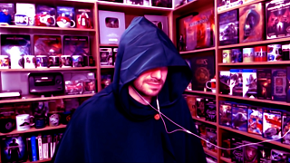
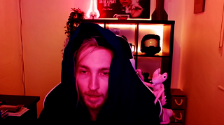
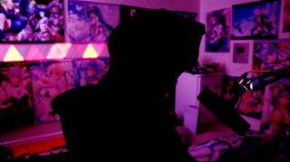
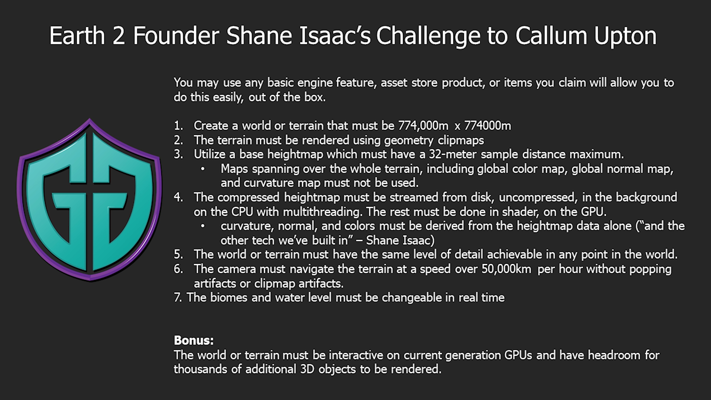
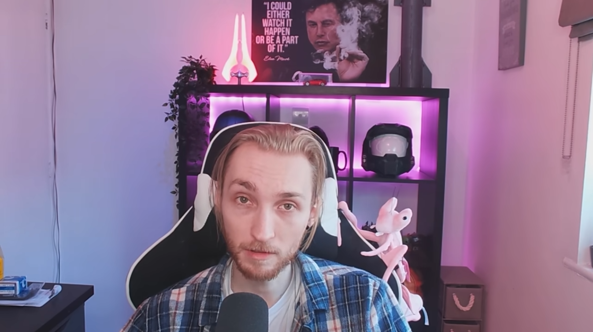
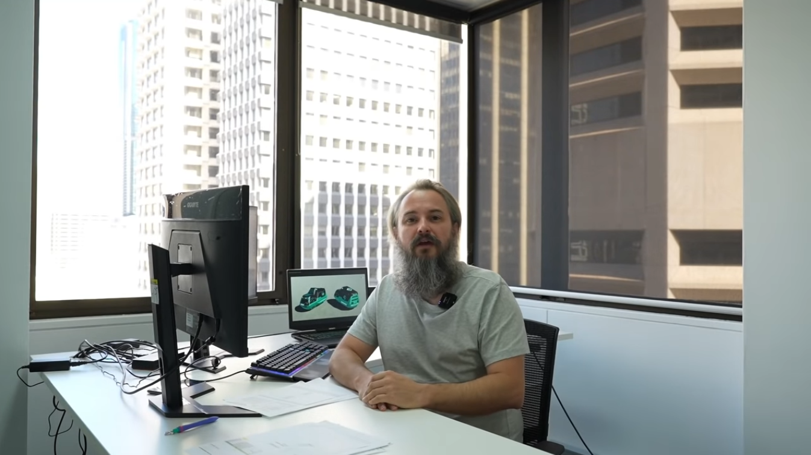

The Bright Side
While the only thing you can see on this website is the NFT scams that companies and individuals make in order to gain more money, there is always a bright side. While people have criticized these companies for the scams they pull, there have been others that have a bigger voice and a community behind them to raise awareness of this. People, like myself learned about the NFT scams happening from youtubers and other public figures that are against these, and the story behind these Youtubers can be amazing at times. Youtubers like KiraTV, Josh Strife Hayes, Upper Echelon Gamers, Someordinarygamers, Moist Critical and more have been following these stories and criticizing them for their manipulation tactics and the way they steal money from people, doing it in an entertaining way at the same time.
While all the above people deserve their own story about the things they do, I can’t personally make them look great in here, the best way present them rightfully is to support them and share them to people who might find them interesting. So, I’d really recommend the reader to check them out and make their own opinion on this matter.
There is something though that I personally want to address in this place, that I think the reader will find interesting and personally It’s my favorite story of this whole “fiesta party”.
April 1st 2022
On the first of April these youtubers uploaded a parody video of them dressed up in black pretending to be the “Dark Brotherhood” and making fun that all this is a conspiracy against these NFT companies in order to bring them down. This all started out by the founder of Earth 2 calling them out and saying that the youtubers are just conspiring against Earth 2 in order to make them go out of business calling them as “The Dark Brotherhood”, so these Youtubers wanted to make fun of the whole situation.
Pictures from the "Dark Brotherhood parody video
  But this is the least of the things that happened on the 1st of April 2022. That day was the end of a specific “7 day challenge”, the founder of Earth 2 Shane Isaac gave, to the youtuber Callum Upton. Shane gave a list of challenges for Callum to complete in 7 days and the reward would be 10.000$, Callum was criticizing Earth 2 for scamming and providing nothing to the public for the past year they have been working on the project. Callum said he could do a better job by himself than the Earth 2 developers, so Shane told him to prove it.
And this was the challenge:
The 7 day Challenge by Shane Isaac
Callum 7 days later delivered, and of course there were conflicts between the communities on who won. Callum predicted 2 things before completing the challenge.
- Shane throughout the 7 day challenge, will start hanging the rules to make it in his favor
- That Calum’s community will support him and Shane’s community will support Earth 2.
Callum was right, this is what happened and because of that, Callum asked to have a 3rd party to decide if Callum succeeded the challenge, his name was Guidebook Gaming, who is in support of the Earth 2 community, but also criticizes it fairly.
Pictures of Callum (left) and Shane(right) from their 7 day challenge videos
 Before I show you what Callum did and if he delivered, I’d like to turn back to Shane and what he did in order to frame Callum into failing the challenge. Firsty, Shane had already stolen from Callum 30 mins of the challenge because he said “He was online when this happened so he saw it”, even though Callum was asleep. Secondly Shane lied that “Callum hired 10 developers during the 7 days challenge in order to help him with the project” even though he had no proof of that, and thirdly, Shane throughout the 7 days challenge, would change the rules of the challenge, making Callum’s work more difficult each time.
If Callum won the challenge, that is up for debating, I cannot say who won but I do support Callum and I really believe he won the challenge and the reward, but you as the reader can make your own opinion to decide if he won. That's why I suggest the reader to go and check Callum's video about his challenge in the about us section.